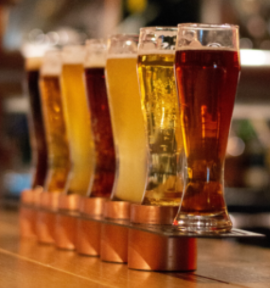
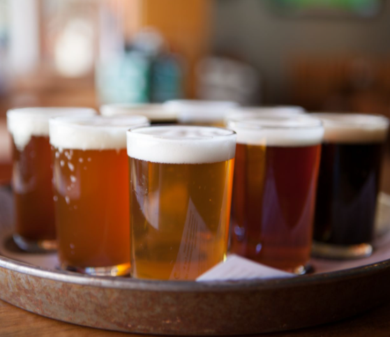
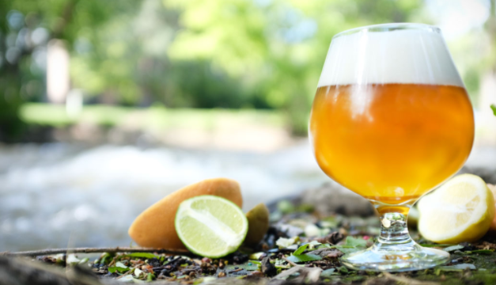
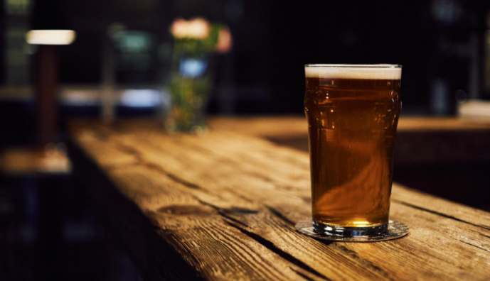

Styles
Technically speaking there are over 75 different styles of beer! To keep things simpler, we will go over the gerenal styles.
- Pale Ales(Suggested Pairing - Grilled Meats): Pale Ales are beers with a malty flavor and a golden color. They are hoppy and can taste a bit like biscuit. Some can be more bitter while others more matly.
- Dark Lagers(Suggested Pairing - Summer Sausage): Dark lagers are a sessionable beer with that is hoppy and malty. These beers can be anywhere from mildly bitter to very bitter and have a hint of caramel flavor.
- Brown Ales(Suggested Pairing - Aged Gouda): Brown ales have a hint of caramel and chocolate. They are lower in hop flavor and mildly bitter.
- India Pale Ales(Suggested Pairing - Finocchiona): IPA's are one of the most popular craft beer styles around right now. They can be fruity and very hoppy with strong aroma and bitterness.
- Wheat Beers(Suggested Pairing - Smoked salmon): Wheat beers have sweet, candy-like flavors and finish with a heavy malty flavor.
- Strong Ales(Suggested Pairing - Strong blue cheese, (Stilton/St. Pete's/Roquefort): Strong ales are often called barley wine. They have a caramel or toffee aroma generally and usually tend to have a very high alcohol content compared to other beer.
- Belgian Styles(Suggested Pairing - Gruyere): Belgian ales are easy to drink. They are lighter with a bit of hoppiness. The are a low malt ale that is slightly spiced and usually a bit fruity.




- Porter(Suggested Pairing - Young Gouda): Porters are an American style beer that has a mild caramel and mocha flavor to them.
- Stouts(Suggested Pairing - Speck): The imperial stout is a high alcohol content beer. They are typically black in color and have a rich, malty flavor.
- German Style Bock(Suggested Pairing - Aged Gouda, salted nuts): Bock beers are a sweet, malty beer. Bock beers should also have a slightly toasted flavor.
- Scottish Ale(Suggested Pairing - Pork Roast): Scottish ales have malty flavors with a hint of caramel. They can also have a slightly smoky taste to them.
- Sour Beers(Suggested Pairing - Blue cheese): Sours are generallyl made through fermentation. They have a sweet and sour taste, and often taste more similar to a cider or a 'kombucha' style drink.
- Pilsener(Suggested Pairing - Havarti, Spicy food): The American lager (or 'Pilsener') has very mild hops and has a refreshing crisp taste to it.